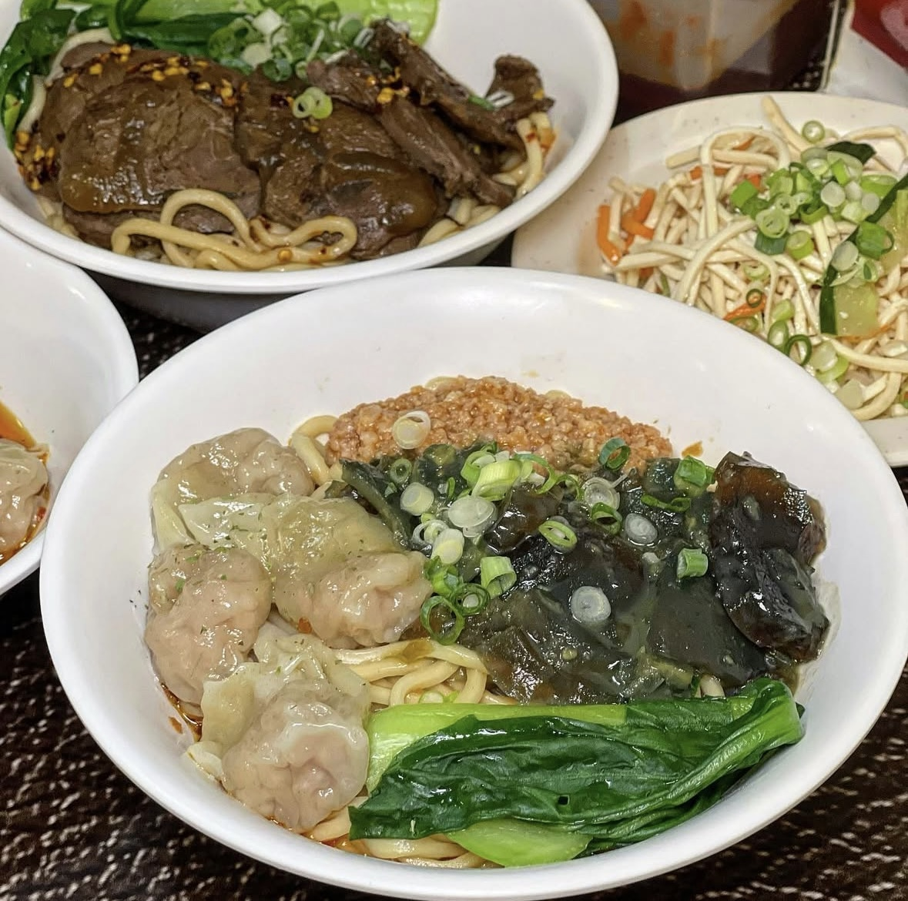

Burger Out：被它的美味KO，一口擊中味蕾死角！
以炸雞為主的漢堡店，店面小小一間，當天是假日去有稍微排隊。漢堡是現點現做，所以上餐的時間會稍微等久一點。雖然Burger Out的漢堡口味沒有很多，但是絕對會被他的炸雞驚艷！炸雞外皮酥脆，但不會刮嘴巴，對於我這種喜歡大口吃漢堡的人，一口下去超滿足～

台北最強皮蛋炒手麵！皮蛋與肉醬的完美搭配
能在繁華的信義區存活下來的傳統小吃店，一定都不簡單，其中一家就是查記麵館！小小一間隱藏在信義區巷弄中，店內位置不多，假日需要提早到，因為有可能需要排隊一小時左右才可以用餐。大家來一定要吃「招牌皮蛋炒手麵」！Q彈有筋道的麵體，吸附了碗中滿滿的皮蛋醬和肉醬，整碗麵充滿皮蛋香氣但不會讓人感覺到皮蛋的腥味。